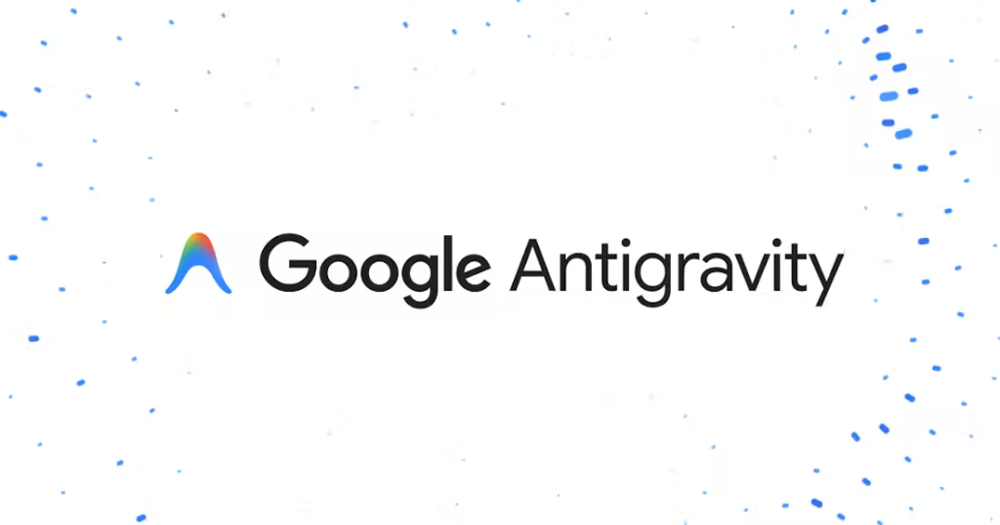

Quality DX Portal
협력기업 역량 강화 세미나
Quality DX Portal
협력기업 역량 강화 세미나
협력사 품질관리를 위한
DX & AI 실무 가이드
품질 DX의 개념부터 생성형 AI 비서 활용법, 그리고 데이터를 직관적으로 시각화하는 Power BI 구축까지 하루 만에 마스터하기
디지털 전환(DX)이란 무엇이며, 왜 품질 관리의 필수 요소인가?
왜 중소기업일수록 DX가 필수인가?
대기업에 비해 인력 유출 및 숙련도 공백이 심한 중소기업일수록, 개인의 기억이나 수기 기록이 아닌 '시스템 기반의 자동화'가 이루어져야 품질 사고로 인한 막대한 위약금 및 거래 중단 리스크를 방지할 수 있습니다. 이는 사치가 아닌, 최소 비용으로 최대 효과를 내는 고효율 생존 전략입니다.
주요 식품기업 DX 성공 사례
- 1) A사: 수기 온도 기록을 IoT 센서 자동화로 전환하여 해썹(HACCP) 데이터 이탈 방지 및 신뢰도 200% 상승.
- 2) B사: 입고부터 출고까지 QR코드 추적 시스템을 도입하여 클레임 발생 시 원인 추적 시간을 3일에서 5분으로 단축.
실시간 추적성 확보 (Traceability)
클레임 발생 시 즉각 원자재 입고부터 제조 공정 센서 데이터까지 5분 이내 역추적 완료하여 신속한 초동 조치를 가능케 합니다.
수기 휴먼에러 및 기록 누락 차단
현장의 자필 측정 일지 대신 모바일 및 자동 연동 센서 데이터를 통해 원천적으로 기록 오류와 조작 가능성을 사전 차단합니다.
대기업-협력사 공동 신뢰 체계
대시보드를 매개로 품질 분석 결과와 지표를 실시간 투명하게 공유함으로써 불필요한 감정 소모를 없애고 파트너십을 견고히 합니다.
품질 실무 현장에서 오늘 당장 실용적으로 쓰는 AI 활용 가이드
실무 밀착형 AI 활용 시나리오 3선
1) 부적합 보고서 초안 자동 작성
현장 상황("만두 피 터짐 발생, 라인3 가동 온도 180도, 현장 습도 높음")만 날것으로 툭 던져도 AI가 5-Why 인과 관계가 들어간 논리적인 품질 부적합 보고서(NCR) 형식으로 문장을 빌드합니다.
2) 해외 식품 규제 및 설비 매뉴얼 번역/요약
복잡하고 어려운 영문 신규 포장기 설비 매뉴얼이나 해외 수출용 첨가물 규정 PDF 문서를 AI에 올린 뒤 "우리 현장에 영향이 있는 핵심 체크리스트 5개만 표로 뽑아줘"라고 지시하여 10분 만에 규제 검토를 끝냅니다.
3) 감정 소모 없는 고난도 고객 클레임 대응문 작성
악성 불만성 요구 사항에 대해 감정을 빼고 식품위생법 규정 및 제조물배경책임에 근거하여 회사의 손해를 방지하면서도 고객을 납득시키는 정중하고 객관적인 이메일 답변 초안을 3초 만에 생성합니다.
현업 복사 전용 5-Why 분석 프롬프트
# 상황: 만두 제품 제조 공정 중 실링 열판 온도 센서 일시 오류로 인해 포장 접착 면 일부 밀봉 미흡 발생. 완제품에서 미세 이격 확인.
# 지시:
아래의 세부 현장 데이터를 바탕으로 5-Why 원인 규명 시나리오를 과학적으로 추적하고, 시정 조치 요구서에 바로 넣을 수 있게 [단기 조치 사항 / 장기 재발방지대책]을 구분하여 격식 있는 공문서 톤으로 최종 보고서를 도출해라.
* 기계 가동 속도: 65rpm / 열판 타겟온도: 190도 / 오류 발생 시점 감지 지연 시간: 12분 / 영향받은 ロット(Lot) 물량: 총 340박스 격리 완료.
사용법: 위 초록색 상자 텍스트를 그대로 복사하여 ChatGPT나 Claude에 붙여넣고 [상황]과 [데이터]만 변경해 보세요.
구글 NotebookLM 활용: 우리 공장 문서로 품질 지식 허브 구축
1단계. 품질 문서 업로드
사내 HACCP 관리 기준서, 표준 작업 지침서(SOP), 원부재료 성적서(PDF/Word)뿐만 아니라, '과거 3개년 동안 쌓인 고객 클레임 이력 정리 엑셀'까지 NotebookLM 소스로 통째로 업로드합니다.
2단계. 대화형 지식 검색
"센서 오작동 시 격리 범위는 어떻게 되지?"와 같은 매뉴얼 검색뿐만 아니라, "최근 3년간 가장 많이 발생한 만두 이물 클레임의 공통 발생 계절과 매뉴얼 상의 누락 원인을 연계 분석해줘" 같은 지능형 추적 질문도 완벽히 대답합니다.
3단계. 교육 자동화 결과 도출
업로드된 품질 문서를 기반으로 현장 신입사원 OJT 교육용 대본, 현장 위생 수칙 FAQ 리스트, 작업 전 5분 안전 TBM 교육용 오디오 가이드 대본까지 '단 10초 만에' 정밀하게 추출하여 즉시 배포할 수 있습니다.
Antigravity(안티그래비티): 품질 시스템 자동화 브릿지
Antigravity의 실무적 핵심 기능
- 품질 데이터 연동 파이프라인 빌더: 협력사 포털, LIMS(품질분석시스템), 공정 PLC 등 분산된 데이터를 AI가 자동으로 수집하고 가공하도록 지원합니다.
- 강력한 망분리 및 데이터 보안성: 사내 기밀 정보 및 공정 핵심 파라미터가 외부 상용 AI 서버로 유출되지 않도록 폐쇄형 보안 모듈로 동작합니다.
- 백그라운드 스케줄러 기능 지원: 사용자가 개입하지 않아도 매시간, 매일 지정된 배치 작업(Batch Job)을 조용히 수행하여 결과물만 제공합니다.

모니터링 적용 효과: 통신 장애 등 설비 연결 오류 발생 즉시 담당자 카카오톡/SMS로 1분 이내 정밀 장애 원인 분석 문자가 발송되도록 하여 골든타임을 확보합니다.
납품 성적서 수집 및 취합 파이프라인 흐름도
Power BI 개요: 반복적인 품질 보고 업무의 종말 선언
왜 엑셀 차트 대신 Power BI 보고서인가?
- 반복 수기 작업의 완전 자동화: 매달 엑셀 원장에서 그래프 복사하여 파워포인트 슬라이드 붙여넣고 수치 수정하던 단순 보고 노동 시간을 제로(0)화합니다.
- 입체적 인터랙션 필터 제공: 고정된 이미지 캡처 보고서와 달리 특정 협력사, 날짜, 불량 분류명을 마우스로 클릭하면 화면 내 모든 관련 차트가 실시간 동적 연동 필터링됩니다.
- 초대용량 데이터 수용 한계 극복: 일반 엑셀의 104만 행 한계를 넘어 공장 PLC 센서에서 쏟아지는 수천만 행의 로우 데이터를 부드럽게 고속 렌더링합니다.
"데이터 정제부터 최종 모니터링 대시보드 구축까지, 단 하나의 도구로 통합 해결합니다."
Power BI의 3대 구성 프로세스
- 1. Power Query (데이터 추출/정제): 흩어진 엑셀, DB 원장을 로드하여 타입 변경, 빈칸 삭제 등 가공을 수행하는 심장부입니다.
- 2. 데이터 모델링 (데이터 관계 형성): 입고 검사 데이터와 제조 이력 데이터를 '바코드 번호'를 키값으로 묶어 통합 분석의 판을 짭니다.
- 3. 시각화 (인터랙티브 대시보드): 정제된 결과 지표를 다이나믹 카드, 파레토 차트, 꺾은선 추이 그래프 등으로 조합하여 스크린에 표출합니다.
Raw 엑셀/DB
Power Query
품질 대시보드
1단계: Power BI가 사랑하는 "올바른 엑셀 데이터 양식" 구축
Bad Case: 잘못된 데이터 형태 (병합/빈칸/가로배열)
| ★ 2026년 6월 생산 품질 검사 원장 (A1~D1 병합) | |||
|---|---|---|---|
| 순번 | 라인명 | 6월 1일 | 6월 2일 |
| 1 | 만두A | 0.02% (NG) | 0.01% (OK) |
| [가독성 향상을 위한 공백 행 삽입] | |||
| 2 | 만두B | 0.04% (NG) | 0.02% (OK) |
- 제목 표시 목적의 A1~D1 병합셀은 데이터 로드 오류를 냅니다.
- 중간에 공백인 빈 행(Empty Row)이 있으면 전송이 중단될 수 있습니다.
- 날짜가 가로로 증가하면 열 개수가 계속 늘어나 분석 차트 적용이 어렵습니다.
Good Case: 표준 DB 구조 (세로 누적형 Tidy Data)
| 검사일자 | 라인명 | 불량률 | 최종판정 |
|---|---|---|---|
| 2026-06-01 | 만두A | 0.0002 | NG |
| 2026-06-01 | 만두B | 0.0004 | NG |
| 2026-06-02 | 만두A | 0.0001 | OK |
| 2026-06-02 | 만두B | 0.0002 | OK |
- 첫째 행은 헤더(Header) 정보만 명확하고 유일하게 정의됩니다.
- 공백 셀이나 가독성용 여백 없이 1 Row = 1 데이터 레코드를 이룹니다.
- 날짜와 데이터가 행(가로)이 아닌 열(세로) 방향으로 길게 누적되는 구조입니다.
2단계: 협력기업 VOC 대시보드 구축 사례 및 핵심 연동 기능 가이드
1. 협력사별 VOC 종량 분석
각 협력기업(지엠에프 151건, 우리델리카 93건, 세진식품 56건 등)에 등록된 실제 VOC 데이터 물량을 Power BI 누적 막대 형태로 실시간 집계하여 **협력사별 품질 취약점**을 비교 분석합니다.
기존의 분기별 서면 보고와 달리 매시간 갱신되는 원본 검사 기록을 연동하여 품질 이슈 발생 즉시 파트너사와 실시간 시그널 공유가 가능해집니다.
2. 불량 유형별 집중 필터링
대시보드 상의 특정 필터(예: **비금속이물 37%, 상태불량 29%**)를 클릭하는 순간, 관련된 원인 공정 라인과 위반 카테고리가 연계 매핑되어 화면 전체가 실시간 반응형으로 필터링 분석됩니다.
품질 미팅 중 특정 이물 결함의 근원지를 즉시 추적할 수 있어 원인 분석 및 대책 회의 시 시간을 크게 축소시켜 줍니다.
3. UCL 한계선 기준 경보 자동화
협력기업이 사전에 정의한 **관리 상한 임계값(UCL)**을 초과하는 불량이 탐지될 경우, 시각적으로 차트의 배경 컬러를 자동으로 붉게 전환하여 현업 담당자의 가시적 인지를 돕습니다.
데이터 정렬과 시각 관제가 실시간으로 결합되어, 공정 상의 대형 사고로 이어지기 전 미리 예측 예방할 수 있는 선제적 안심 시스템을 완성합니다.
데이터를 품은 품질 관리,
협력사와 풀무원이 함께 도약합니다.
오늘 학습하신 생성형 AI 프롬프트 가이드와 Power BI 표준 데이터 구성법을 토대로 실제 품질 실무 현장에서 작지만 강한 혁신을 만들어 주시기 바랍니다.